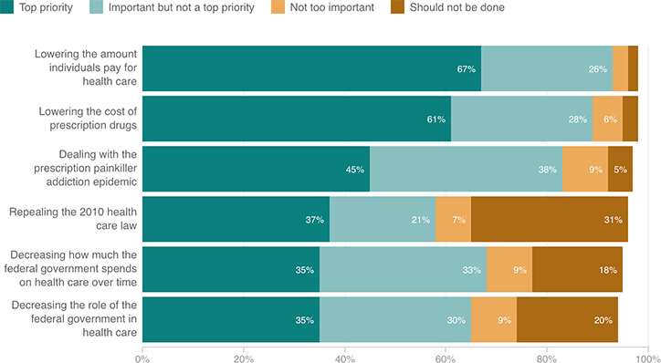

Lowering Out-of-Pocket Costs Is Top Health Care Priority
Should each of the following things Donald Trump and the next Congress might do when it comes to health care be a top priority, an important but not a top priority, not too important, or should it not be done?
